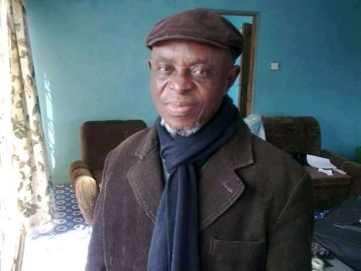

Alhaji Shodunke Abdullateef Adetola(8th May 1937 - 25th October 2018) commonly called MODEL, was a noble man born in well known yoruba land (Ogere Remo) Ogun State Nigeria. He is a Graphic Designer and a Print Artist, owns a printingPress known as MODEL PRINTS, He founded the First Muslim School in Remo Land, He is indeed a Role Model for the Youth
The most well-known portrait of ALHAJI MODEL
1965 - He Serve as an Apprentice, learning Graphic and Printing Press @ Sagam Remo
1980 - He Graduated and establish his printingPress business Which was Known Model PRINTS
1985 - He won the WEMA BANK cheque book printpress Contract
1993 - He extended/propunded the Tabliq Muslim group to Remo Land.
2001 - He Founded the First Mulim School in Remo Land Know as Allateef Muslim College.
2006 - He performed the Religious pilgrimage to Mecca
2009 - He was appointed as the General Secretary of Ilisan Youth Development Association
2016 - He went for the Religious Pilgrimage for the second time.
2016 - He became the BALOGUN Head chief of the Ilara Branch Islamic Mosque
2017 - He celebrated his 80th Birthday in ILISAN REMO OGUN STATE.
ALHAJI MODEL, has been a Great-GrandFather, GrandFather, Father, Uncle, Nephew, and Brother to both Relatives and Non-Relatives. He is a man that believes in honesty and FEAR of GOD, He is known for his kindness and Generousity and He is Indeed a ROLE MODEL to all humans
May his gentle Soul Rest In Perfect Peace...